pacman::p_load(tidyverse, tmap, sf, sfdep, corrplot, terra, gstat, automap, SpatialML, GWmodel, Metrics, ggrepel)Take-home Exercise 3: Geospatial Analysis of Singapore Weather Data - Prototyping for Visual Analytics Shiny Application
1 Overview
In this take-home exercise, I will develop the Geospatial Analysis module prototype for our group’s Shiny application, WeatherWise Singapore – Visual Analytics to Unveil Singapore’s Evolving Climate.
My focus will be on:
Evaluating and ensuring that the required R packages for our Shiny application are supported on CRAN.
Preparing and testing specific R code to verify expected outputs.
Defining the parameters and outputs to be integrated into the Shiny application.
Selecting appropriate Shiny UI components for presenting these parameters effectively.
1.1 The Data
For the purpose of this prototype, the below 3 datasets will be used:
Scraped weather data from weather.gov.sg
Weather Station records from weather.gov.sg
Singapore Master Plan 2014 Subzone Boundary from data.gov.sg
2 Install R packages
The below code chunk uses p_load() to load and install the relevant packages into R environment.
3 Data Import and Preparation
3.1 Daily Weather Records
First we read in the daily weather records scraped from weather.gov.sg into tibble dataframe climate_raw using read_csv().
climate_raw = read_csv("data/Climate_Data_2015_2024.csv")Next we check if the scraped data contains any duplicate.
duplicate <- climate_raw %>%
group_by_all() %>%
filter(n()>1) %>%
ungroup()
duplicate# A tibble: 0 × 13
# ℹ 13 variables: Station <chr>, Year <dbl>, Month <dbl>, Day <dbl>,
# Daily Rainfall Total (mm) <dbl>, Highest 30 min Rainfall (mm) <dbl>,
# Highest 60 min Rainfall (mm) <dbl>, Highest 120 min Rainfall (mm) <dbl>,
# Mean Temperature (Celsius) <dbl>, Maximum Temperature (Celsius) <dbl>,
# Minimum Temperature (Celsius) <dbl>, Mean Wind Speed (km/h) <dbl>,
# Max Wind Speed (km/h) <dbl>The output shows there is no duplicates.
The below code chunk uses summary() to have an overview of the scraped dataset.
summary(climate_raw) Station Year Month Day
Length:192483 Min. :2015 Min. : 1.000 Min. : 1.00
Class :character 1st Qu.:2017 1st Qu.: 3.000 1st Qu.: 8.00
Mode :character Median :2019 Median : 6.000 Median :16.00
Mean :2019 Mean : 6.485 Mean :15.73
3rd Qu.:2022 3rd Qu.: 9.000 3rd Qu.:23.00
Max. :2024 Max. :12.000 Max. :31.00
Daily Rainfall Total (mm) Highest 30 min Rainfall (mm)
Min. : 0.000 Min. : 0.000
1st Qu.: 0.000 1st Qu.: 0.000
Median : 0.200 Median : 0.200
Mean : 6.672 Mean : 3.968
3rd Qu.: 6.600 3rd Qu.: 4.200
Max. :247.200 Max. :71.800
NA's :4921 NA's :12754
Highest 60 min Rainfall (mm) Highest 120 min Rainfall (mm)
Min. : 0.000 Min. : 0.000
1st Qu.: 0.000 1st Qu.: 0.000
Median : 0.200 Median : 0.200
Mean : 4.939 Mean : 5.639
3rd Qu.: 4.800 3rd Qu.: 5.600
Max. :103.100 Max. :148.600
NA's :12811 NA's :12808
Mean Temperature (Celsius) Maximum Temperature (Celsius)
Min. :22.20 Min. :22.80
1st Qu.:27.30 1st Qu.:30.90
Median :28.10 Median :32.00
Mean :28.05 Mean :31.85
3rd Qu.:28.90 3rd Qu.:33.00
Max. :31.70 Max. :38.00
NA's :128350 NA's :124311
Minimum Temperature (Celsius) Mean Wind Speed (km/h) Max Wind Speed (km/h)
Min. : 0.00 Min. : 0.40 Min. : 3.70
1st Qu.:24.30 1st Qu.: 5.70 1st Qu.: 26.60
Median :25.30 Median : 7.60 Median : 31.50
Mean :25.39 Mean : 8.48 Mean : 32.92
3rd Qu.:26.40 3rd Qu.:10.40 3rd Qu.: 37.40
Max. :34.70 Max. :66.60 Max. :138.60
NA's :124342 NA's :125214 NA's :124380 The output shows there are many null values, while the min max range of all weather measurements are in the normal range.
3.2 Weather Stations
Next we read in the stations details to retrieve station types and coordinates. For our Shiny application, we focus solely on Full AWS stations, as they provide comprehensive data across all weather parameters. Other station types, such as Closed Stations and Daily Rainfall Stations (which only record rainfall metrics), are excluded from further analysis.
station = read_csv('data/Station_Records.csv') |>
filter(Station_Type == "Full AWS Station")The below code chunk checks for duplicate.
duplicate <- station %>%
group_by_all() %>%
filter(n()>1) %>%
ungroup()
duplicate# A tibble: 0 × 5
# ℹ 5 variables: Station <chr>, code <chr>, Lat <dbl>, Long <dbl>,
# Station_Type <chr>The output shows there is no duplicate.
3.3 Master Plan Subzone Boundary
The below code chunk imports Singapore Planning Subzone boundary to mpsz sf dataframe using the below functions:
st_read(): to read in shapefilest_transform(): to ensure the coordinates are transforms to the correct CRS 3414 of Singapore Projected Coordinate System SVY21.
mpsz = st_read(dsn = "data", layer = "MP14_SUBZONE_WEB_PL") |>
st_transform(crs = 3414)Reading layer `MP14_SUBZONE_WEB_PL' from data source
`C:\thuphuong1110\ISSS608-VAA\Take-home_Ex\Take-home_Ex03\data'
using driver `ESRI Shapefile'
Simple feature collection with 323 features and 15 fields
Geometry type: MULTIPOLYGON
Dimension: XY
Bounding box: xmin: 2667.538 ymin: 15748.72 xmax: 56396.44 ymax: 50256.33
Projected CRS: SVY214 Data Wrangling
4.1 Join Station with Climate dataframe
First we join station with climate_raw dataframe using inner_join() to include only records from active Full AWS Station.
climate = inner_join(station, climate_raw, by = "Station")The below code chunk checks for duplicates in the joined dataframe.
duplicate <- climate %>%
group_by_all() %>%
filter(n()>1) %>%
ungroup()
duplicate# A tibble: 0 × 17
# ℹ 17 variables: Station <chr>, code <chr>, Lat <dbl>, Long <dbl>,
# Station_Type <chr>, Year <dbl>, Month <dbl>, Day <dbl>,
# Daily Rainfall Total (mm) <dbl>, Highest 30 min Rainfall (mm) <dbl>,
# Highest 60 min Rainfall (mm) <dbl>, Highest 120 min Rainfall (mm) <dbl>,
# Mean Temperature (Celsius) <dbl>, Maximum Temperature (Celsius) <dbl>,
# Minimum Temperature (Celsius) <dbl>, Mean Wind Speed (km/h) <dbl>,
# Max Wind Speed (km/h) <dbl>The output shows there is no duplicate in climate dataframe.
Next we filter climate dataset for only relevant columns for our weather analysis.
climate <- climate |>
select(Station, Station_Type, Year, Month, Day,
`Daily Rainfall Total (mm)`,
`Mean Temperature (Celsius)`,
`Maximum Temperature (Celsius)`,
`Minimum Temperature (Celsius)`,
`Mean Wind Speed (km/h)`)
climate# A tibble: 71,156 × 10
Station Station_Type Year Month Day `Daily Rainfall Total (mm)`
<chr> <chr> <dbl> <dbl> <dbl> <dbl>
1 Admiralty Full AWS Station 2015 1 1 0
2 Admiralty Full AWS Station 2015 1 2 0
3 Admiralty Full AWS Station 2015 1 3 0
4 Admiralty Full AWS Station 2015 1 4 0
5 Admiralty Full AWS Station 2015 1 5 0
6 Admiralty Full AWS Station 2015 1 6 41.8
7 Admiralty Full AWS Station 2015 1 7 7.8
8 Admiralty Full AWS Station 2015 1 8 6.4
9 Admiralty Full AWS Station 2015 1 9 0.6
10 Admiralty Full AWS Station 2015 1 10 1.6
# ℹ 71,146 more rows
# ℹ 4 more variables: `Mean Temperature (Celsius)` <dbl>,
# `Maximum Temperature (Celsius)` <dbl>,
# `Minimum Temperature (Celsius)` <dbl>, `Mean Wind Speed (km/h)` <dbl>The final climate dataframe consists of 10 columns, including the 5 key weather parameters selected for further analysis.
4.2 Missing Rainfall records
Next we check for null records from the key parameter Daily Rainfall Total (mm).
# Count missing values for each Station, Year, and Month
missing_rain_counts <- climate %>%
group_by(Station, Year, Month) %>%
summarise(
`Missing Daily Rainfall Total` = sum(is.na(`Daily Rainfall Total (mm)`)) ) %>%
# Exclude rows where all missing counts are zero
filter(`Missing Daily Rainfall Total` > 0) |>
ungroup()# Count the number of months per station where missing days exceed 15
missing_rain_summary <- missing_rain_counts %>%
filter(`Missing Daily Rainfall Total` >= 15) %>%
group_by(Station, Year) %>%
summarise(Count_Months = n()) %>%
arrange(Year)|>
pivot_wider(names_from = Year, values_from = Count_Months) |>
ungroup()
missing_rain_summary# A tibble: 7 × 8
Station `2015` `2016` `2017` `2018` `2019` `2020` `2024`
<chr> <int> <int> <int> <int> <int> <int> <int>
1 Jurong (West) 1 NA 1 NA NA NA NA
2 Sentosa Island 1 1 2 NA NA 1 NA
3 Newton NA 1 2 NA NA NA NA
4 Admiralty NA NA 1 NA NA NA NA
5 Choa Chu Kang (South) NA NA 1 NA NA NA NA
6 Semakau Island NA NA 1 5 12 3 NA
7 Marina Barrage NA NA NA NA NA NA 1The output reveals 7 stations with ≥15 days of missing Daily Rainfall Total (mm) in more than one month over the years. Semakau Island station has a full year of missing data in 2019, while 2015–2017 period shows a high prevalence of missing data across stations.
4.3 Missing Temperature Records
We carry out the same check for Mean Temperature (Celsius) .
# Count missing values for each Station, Year, and Month
missing_temp_counts <- climate %>%
group_by(Station, Year, Month) %>%
summarise(
`Missing Mean Temperature` = sum(is.na(`Mean Temperature (Celsius)`))) %>%
# Exclude rows where all missing counts are zero
filter(`Missing Mean Temperature` > 0) |>
ungroup()# Count the number of months per station where missing days exceed 15
missing_temp_summary <- missing_temp_counts %>%
filter(`Missing Mean Temperature` >= 15) %>%
group_by(Station, Year) %>%
summarise(Count_Months = n()) %>%
arrange(Year)|>
pivot_wider(names_from = Year, values_from = Count_Months) |>
ungroup()
missing_temp_summary# A tibble: 15 × 11
Station `2015` `2016` `2017` `2018` `2019` `2020` `2021` `2022` `2023` `2024`
<chr> <int> <int> <int> <int> <int> <int> <int> <int> <int> <int>
1 Jurong… 1 NA 2 NA NA NA NA NA NA NA
2 Paya L… 12 12 8 NA NA NA NA 1 NA NA
3 Jurong… NA 2 1 NA NA 1 NA NA NA NA
4 Newton NA 1 2 NA NA NA NA NA NA NA
5 Pulau … NA 1 2 NA NA NA NA NA NA NA
6 Sentos… NA 1 3 NA 1 NA NA NA NA NA
7 Tuas S… NA 1 NA NA NA NA NA NA NA NA
8 Admira… NA NA 3 NA NA NA NA NA NA NA
9 Choa C… NA NA 2 NA NA NA NA NA NA NA
10 Clemen… NA NA 2 NA NA NA NA NA NA NA
11 Marina… NA NA 2 1 4 2 NA 4 12 12
12 Seletar NA NA 12 11 12 12 NA NA NA NA
13 Semaka… NA NA 2 12 12 5 1 NA NA NA
14 Sembaw… NA NA 4 12 12 12 12 NA NA NA
15 Tengah NA NA 4 12 12 12 12 NA NA 2The same 7 stations with significant missing Daily Rainfall Total (mm) are also among the 15 stations with missing Mean Temperature (Celsius) data, where more than 15 days are missing for certain months. Some stations have full years of missing data, with 2015–2017 particularly shows a high prevalence of missing data across stations.
4.4 Exclude Station with many missing records
Given the extensive missing data from 2015–2017, we will retain data from 2018 onwards. For each station, we will count the total number of months with more than 15 days missing data across the years and flag stations with more than 3 missing months. Those stations will be excluded from the main climate dataset.
filter_invalid_stations <- function(summary_df, from_year = 2018) {
# Get only year columns ≥ from_year
year_cols <- summary_df |>
select(where(is.numeric)) |>
select(matches("^[0-9]{4}$")) |>
select(as.character(from_year):last_col()) |>
colnames()
summary_df |>
rowwise() |>
mutate(total_flagged_months = sum(c_across(all_of(year_cols)), na.rm = TRUE)) |>
filter(total_flagged_months >= 3) |>
pull(Station)
}# Get invalid stations (stations to exclude)
invalid_rain_stations <- filter_invalid_stations(missing_rain_summary)
invalid_temp_stations <- filter_invalid_stations(missing_temp_summary)# Combine all stations to exclude
stations_to_exclude <- union(invalid_rain_stations, invalid_temp_stations)
stations_to_exclude[1] "Semakau Island" "Marina Barrage" "Seletar" "Sembawang"
[5] "Tengah" The above 5 stations will be excluded. The below code chunk applies this filter on the climate dataframe.
# Now filter the full dataset to only include stations from 2018-2024
climate_final <- climate |>
filter(!(Station %in% stations_to_exclude), Year >= 2018, Year <= 2024)
summary(climate_final) Station Station_Type Year Month
Length:38186 Length:38186 Min. :2018 Min. : 1.000
Class :character Class :character 1st Qu.:2019 1st Qu.: 4.000
Mode :character Mode :character Median :2021 Median : 7.000
Mean :2021 Mean : 6.529
3rd Qu.:2023 3rd Qu.:10.000
Max. :2024 Max. :12.000
Day Daily Rainfall Total (mm) Mean Temperature (Celsius)
Min. : 1.00 Min. : 0.000 Min. :22.20
1st Qu.: 8.00 1st Qu.: 0.000 1st Qu.:27.30
Median :16.00 Median : 0.200 Median :28.10
Mean :15.73 Mean : 6.868 Mean :28.05
3rd Qu.:23.00 3rd Qu.: 6.600 3rd Qu.:28.90
Max. :31.00 Max. :210.600 Max. :31.70
NA's :260 NA's :571
Maximum Temperature (Celsius) Minimum Temperature (Celsius)
Min. :22.80 Min. :20.40
1st Qu.:30.80 1st Qu.:24.40
Median :32.00 Median :25.40
Mean :31.79 Mean :25.46
3rd Qu.:33.00 3rd Qu.:26.50
Max. :38.00 Max. :29.70
NA's :483 NA's :487
Mean Wind Speed (km/h)
Min. : 0.400
1st Qu.: 5.600
Median : 7.600
Mean : 8.474
3rd Qu.:10.400
Max. :31.300
NA's :1701 Below is the list of the final 15 AWS stations in climate_final that we will be used for further analysis.
climate_final %>%
distinct(Station) %>%
arrange(Station) %>%
mutate(Station_ID = row_number())# A tibble: 15 × 2
Station Station_ID
<chr> <int>
1 Admiralty 1
2 Ang Mo Kio 2
3 Changi 3
4 Choa Chu Kang (South) 4
5 Clementi 5
6 East Coast Parkway 6
7 Jurong (West) 7
8 Jurong Island 8
9 Newton 9
10 Pasir Panjang 10
11 Paya Lebar 11
12 Pulau Ubin 12
13 Sentosa Island 13
14 Tai Seng 14
15 Tuas South 154.5 Replacing Missing Values using SMA 5 days
The below code chunk counts the number of missing values in each column of climate_final.
climate_final %>%
summarise(across(where(is.numeric), ~sum(is.na(.)), .names = "missing_{.col}"))# A tibble: 1 × 8
missing_Year missing_Month missing_Day `missing_Daily Rainfall Total (mm)`
<int> <int> <int> <int>
1 0 0 0 260
# ℹ 4 more variables: `missing_Mean Temperature (Celsius)` <int>,
# `missing_Maximum Temperature (Celsius)` <int>,
# `missing_Minimum Temperature (Celsius)` <int>,
# `missing_Mean Wind Speed (km/h)` <int>The output reveals significant missing values across the five weather parameters. To address this, we will first apply a 5-day backward moving average for imputation. However, for cases where this method cannot be applied (e.g., missing values at the beginning of the time series), we will use a 5-day forward moving average as a fallback.
# === Load dataset ===
climate <- climate_final
original <- climate
# === Columns to impute ===
impute_cols <- c("Daily Rainfall Total (mm)",
"Mean Temperature (Celsius)",
"Maximum Temperature (Celsius)",
"Minimum Temperature (Celsius)",
"Mean Wind Speed (km/h)")
# === Backward SMA-5 for first 4 rows ===
# === Backward SMA-5 (recursive fill for rows 4 to 1) ===
for (i in 4:1) {
window <- climate[(i + 1):(i + 5), impute_cols]
sma_values <- colMeans(window, na.rm = TRUE) %>% round(1)
climate[i, impute_cols] <- as.list(sma_values)
}
# === Forward SMA-5 for all other NAs ===
for (col in impute_cols) {
na_indices <- which(is.na(climate[[col]]))
for (idx in na_indices) {
if (idx >= 5) {
sma_val <- mean(climate[[col]][(idx - 5):(idx - 1)], na.rm = TRUE) %>% round(1)
if (!is.nan(sma_val)) {
climate[[col]][idx] <- sma_val
}
}
}
}
# === Save updated CSV ===
write_csv(climate, "data/climate_historical_daily_records/climate_final_2018_2024.csv")The final prepared dataset for our analysis is saved as climate_final_2018_2024.csv.
The below code chunk reads the final dataset from climate_final_2018_2024.csv for further analysis.
climate = read_csv('data/climate_final_2018_2024.csv')
# Convert Year, Month, and Day into a Date column
climate$Date <- as.Date(with(climate, paste(Year, Month, Day, sep = "-")), format = "%Y-%m-%d")We verify the final CSV for missing data using below code chunk. The output confirms that all missing values have been successfully imputed.
climate %>%
summarise(across(where(is.numeric), ~sum(is.na(.)), .names = "missing_{.col}"))# A tibble: 1 × 8
missing_Year missing_Month missing_Day `missing_Daily Rainfall Total (mm)`
<int> <int> <int> <int>
1 0 0 0 0
# ℹ 4 more variables: `missing_Mean Temperature (Celsius)` <int>,
# `missing_Maximum Temperature (Celsius)` <int>,
# `missing_Minimum Temperature (Celsius)` <int>,
# `missing_Mean Wind Speed (km/h)` <int>The below code chunk provides a summary of the imputed climate dataframe
summary(climate) Station Station_Type Year Month
Length:38186 Length:38186 Min. :2018 Min. : 1.000
Class :character Class :character 1st Qu.:2019 1st Qu.: 4.000
Mode :character Mode :character Median :2021 Median : 7.000
Mean :2021 Mean : 6.529
3rd Qu.:2023 3rd Qu.:10.000
Max. :2024 Max. :12.000
Day Daily Rainfall Total (mm) Mean Temperature (Celsius)
Min. : 1.00 Min. : 0.000 Min. :22.20
1st Qu.: 8.00 1st Qu.: 0.000 1st Qu.:27.20
Median :16.00 Median : 0.200 Median :28.10
Mean :15.73 Mean : 6.888 Mean :28.04
3rd Qu.:23.00 3rd Qu.: 6.600 3rd Qu.:28.90
Max. :31.00 Max. :210.600 Max. :31.70
Maximum Temperature (Celsius) Minimum Temperature (Celsius)
Min. :22.80 Min. :20.40
1st Qu.:30.80 1st Qu.:24.40
Median :32.00 Median :25.40
Mean :31.79 Mean :25.46
3rd Qu.:33.00 3rd Qu.:26.50
Max. :38.00 Max. :29.70
Mean Wind Speed (km/h) Date
Min. : 0.400 Min. :2018-01-01
1st Qu.: 5.700 1st Qu.:2019-09-29
Median : 7.600 Median :2021-07-02
Mean : 8.605 Mean :2021-06-30
3rd Qu.:10.600 3rd Qu.:2023-04-02
Max. :31.300 Max. :2024-12-31 5 Extreme Weather Events
Plotting extreme weather events, such as the wettest, coldest, and hottest days by weather station, provides valuable insights into local climate variability and trends. It helps identify regions prone to extreme conditions, assess potential climate change impacts, and improve preparedness for future weather anomalies. Additionally, visualizing these events spatially can reveal geographic patterns, aiding in infrastructure planning, disaster risk management, and environmental studies.
First, we identify the most extreme event per station using the code chunk below. For this prototype, we focus on the wettest day (highest daily rainfall) recorded at each station from 2018 to 2024, which will be plotted on the final map visualization.
# Identify the most extreme event per station
extreme_values <- climate %>%
group_by(Station) %>%
summarise(
Coolest_Day = min(`Minimum Temperature (Celsius)`, na.rm = TRUE),
Coolest_Date = Date[which.min(`Minimum Temperature (Celsius)`)][1],
Hottest_Day = max(`Maximum Temperature (Celsius)`, na.rm = TRUE),
Hottest_Date = Date[which.max(`Maximum Temperature (Celsius)`)][1],
Wettest_Day = max(`Daily Rainfall Total (mm)`, na.rm = TRUE),
Wettest_Date = Date[which.max(`Daily Rainfall Total (mm)`)][1],
Strongest_Wind = max(`Mean Wind Speed (km/h)`, na.rm = TRUE),
Strongest_Wind_Date = Date[which.max(`Mean Wind Speed (km/h)`)][1],) %>%
ungroup()# Create a label combining Station, Wettest Day value, and Date
extreme_values <- extreme_values |>
mutate(Wettest_Label = paste(Station, Wettest_Day, " mm", Wettest_Date, sep = '\n'))The below code chunk converts extreme_values to extreme_sf sf dataframe using left_join() with station to retrieve stations’ longitude/latitude and st_as_sf() .
# Convert extreme values to sf object for plotting
extreme_sf <- extreme_values |>
left_join(station) |>
st_as_sf(coords = c("Long","Lat"),
crs= 4326) |>
st_transform(crs = 3414)The below code chunk plots the wettest day at each station from 2018 to 2024.
tmap_mode('view')
tm_shape(extreme_sf) +
tm_bubbles(size = 1, fill = "Wettest_Day",
fill.scale = tm_scale_continuous(values = "brewer.blues"),
fill.legend = tm_legend(title = "Wettest Day (mm)"),
) +
tm_text("Wettest_Label", size = 0.8,
options = opt_tm_text(point.label = TRUE)) +
tm_title("Wettest Day by Station") +
tm_layout(legend.outside = TRUE)tmap_mode('plot')6 Geospatial Interpolation
Geospatial interpolation is a valuable tool for analyzing Singapore’s weather patterns, such as rainfall, temperature, and wind speed, by leveraging data collected from the 15 weather stations. This method allows for the estimation of weather conditions at locations where direct measurements are unavailable, improving the spatial resolution of weather data. By applying interpolation techniques including inverse distance weighting and ordinary kriging, we can generate continuous surfaces that reveal localized variations in weather patterns across Singapore, providing better insights into microclimates, and enhancing decision-making for urban planning.
For the purpose of this geospatial interpolation prototype, we use data of December 2024 (latest month with available data) and focus on daily rainfall measure.
climate_latest = climate |>
filter(Year == 2024,
Month == 12)The below code chunk calculates total rainfall in December 2024.
rainfall_latest = climate |>
select(c(1,6)) |>
group_by(Station) |>
summarise(monthly_rainfall = sum(`Daily Rainfall Total (mm)`)) |>
ungroup()Next we join the rainfall_latest dataframe with station dataframe to take in station longitude and latitude.
rainfall = rainfall_latest |>
left_join(station) |>
select(-c('code','Station_Type'))The code chunk below uses st_as_sf() of sf package is used to convert climate_latest into a simple feature data.frame object called climate_latest_sf.
rainfall_sf <- st_as_sf(rainfall,
coords = c("Long",
"Lat"),
crs= 4326) %>%
st_transform(crs = 3414)6.1 Visualising the data prepared
The below code chunk plots a map of the prepared data.
tm_shape(mpsz) +
tm_borders() +
tm_shape(rainfall_sf) +
tm_dots(size = 0.8,
fill = 'monthly_rainfall',
fill.scale = tm_scale_continuous(values = 'brewer.blues'))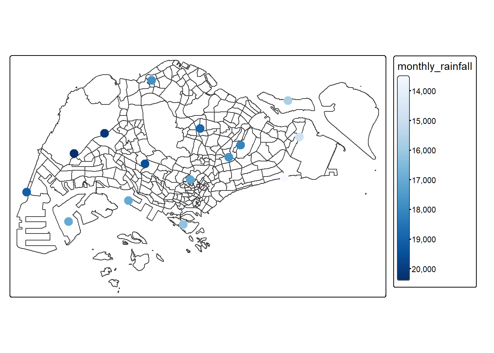
6.2 Spatial Interpolation: gstat method
In this section, we perform spatial interpolation using the gstat package. To perform spatial interpolation with gstat, we first need to create a gstat object using the gstat() function. This object contains all the necessary information for spatial interpolation, including:
The model definition
The calibration data
Based on the function’s arguments, gstat determines the type of interpolation model to apply:
No variogram model → Inverse Distance Weighting (IDW)
Variogram model without covariates → Ordinary Kriging
Variogram model with covariates → Universal Kriging
6.2.1 Data preparation
First we create a grid data object using rast() of terra package.
grid <- terra::rast(mpsz,
nrows = 690,
ncols = 1075)
gridclass : SpatRaster
dimensions : 690, 1075, 1 (nrow, ncol, nlyr)
resolution : 49.98037, 50.01103 (x, y)
extent : 2667.538, 56396.44, 15748.72, 50256.33 (xmin, xmax, ymin, ymax)
coord. ref. : SVY21 / Singapore TM (EPSG:3414) Next, a list called xy is created using xyFromCell() of terra package.
xy <- terra::xyFromCell(grid,
1:ncell(grid))
head(xy) x y
[1,] 2692.528 50231.33
[2,] 2742.509 50231.33
[3,] 2792.489 50231.33
[4,] 2842.469 50231.33
[5,] 2892.450 50231.33
[6,] 2942.430 50231.33The below code chunk creates a data frame called coop with prediction/simulation locations.
coop <- st_as_sf(as.data.frame(xy),
coords = c("x", "y"),
crs = st_crs(mpsz))
coop <- st_filter(coop, mpsz)
head(coop)Simple feature collection with 6 features and 0 fields
Geometry type: POINT
Dimension: XY
Bounding box: xmin: 25883.42 ymin: 50231.33 xmax: 26133.32 ymax: 50231.33
Projected CRS: SVY21 / Singapore TM
geometry
1 POINT (25883.42 50231.33)
2 POINT (25933.4 50231.33)
3 POINT (25983.38 50231.33)
4 POINT (26033.36 50231.33)
5 POINT (26083.34 50231.33)
6 POINT (26133.32 50231.33)6.3 Inverse Distance Weighted (IDW) Interpolation
In the IDW (Inverse Distance Weighting) interpolation method, sample points are assigned weights during the interpolation process such that the influence of a point decreases as its distance from the unknown point increases. Weighting is determined by a coefficient that controls how rapidly the influence of distant points diminishes. A higher weighting coefficient reduces the impact of distant points on the interpolation, causing the value of the unknown point to resemble that of the nearest observed point.
However, the IDW method has some limitations. The quality of the interpolation can degrade if the sample data points are unevenly distributed. Additionally, the interpolated surface can only reach its maximum or minimum values at the sample data points, often resulting in small peaks or pits around these points.
6.3.1 Working with gstat
We will use three arguments in the gstat function:
formula: Specifies the prediction formula, which defines the dependent and independent variables (covariates).
data: Contains the calibration data.
model: Defines the variogram model to be used.
It is important to specify these parameters by name, as they are not the first three arguments in the gstat function definition.
To perform interpolation using the IDW method, we create a gstat object by specifying only the formula and locations.
res <- gstat(formula = monthly_rainfall ~ 1,
locations = rainfall_sf,
nmax = 5,
set = list(idp = 1))Now that our model is defined, we can use the predict() function to perform the interpolation and calculate predicted values. The predict() function accepts the following parameters:
A raster—stars object
A model—gstat object
The raster serves two purposes:
Specify the locations where we want to make predictions (applies to all methods).
Specify covariate values (applicable only in Universal Kriging).
resp <- predict(res, coop)[inverse distance weighted interpolation]resp$x <- st_coordinates(resp)[,1]
resp$y <- st_coordinates(resp)[,2]
resp$pred <- resp$var1.pred
pred <- terra::rasterize(resp, grid,
field = "pred",
fun = "mean")6.3.2 Mapping the interpolated rainfall raster
The below code chunk plot the interpolated surface using tmap functions.
tm_shape(pred) +
tm_raster(col_alpha = 0.8,
col.scale = tm_scale_continuous(
values = "brewer.greens"))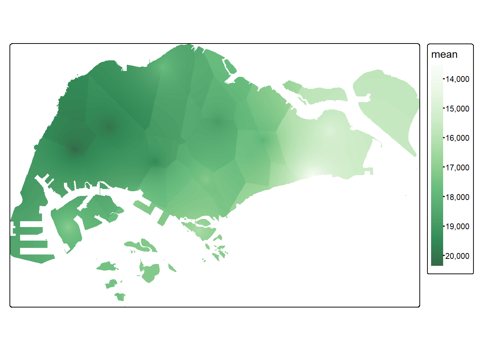
6.4 Kriging
Kriging is an advanced interpolation method that estimates a variable’s values across a continuous spatial field based on a limited set of sampled data points. Unlike Inverse Distance Weighted (IDW) interpolation, which assumes a predefined spatial distribution, kriging leverages the spatial correlation between sampled points to produce more accurate predictions and quantify uncertainty for each interpolated value.
Kriging assigns greater weight to nearby points while accounting for point clustering to minimize bias. It is an optimal linear predictor and an exact interpolator, meaning that interpolated values align with observed data at sampled locations and minimize prediction errors. The method is particularly useful when spatial autocorrelation is present, helping to preserve spatial variability that simpler methods might overlook.
Kriging follows a two-step process:
Variogram modeling – The spatial covariance structure is analyzed by fitting a variogram, which depicts the relationship between point pairs based on their separation distance.
Interpolation – Weights derived from the variogram model are used to predict values at unsampled locations.
A variogram, or semivariogram, visually represents how data points relate spatially by plotting semi-variance (half the mean-squared difference between values) against lag distance (the separation between points). The experimental variogram reflects observed spatial patterns, while the model variogram represents the best-fit theoretical distribution for interpolation.
Kriging is most effective when moderate to strong spatial autocorrelation exists. In such cases, it enhances spatial predictions while quantifying the uncertainty of estimates, making it a valuable tool for geospatial analysis.
6.4.1 Working with gstat
Firstly, we calculate and examine the empirical variogram using the variogram() function from the gstat package. This function requires two arguments:
formula: Specify the dependent variable and the covariates (same as in the gstat function)
data: A point layer containing the dependent variable and covariates as attributes.
v <- variogram(monthly_rainfall ~ 1,
data = rainfall_sf)
plot(v)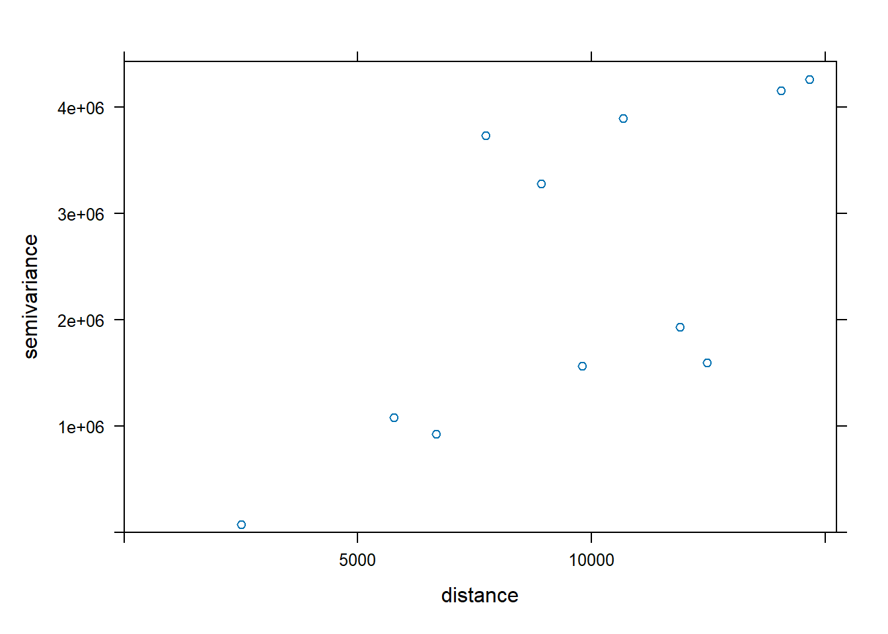
The below code code chunk fits an empirical variogram model using fit.variogram() of gstat package.
fv <- fit.variogram(object = v,
model = vgm(
psill = 0.5,
model = "Sph",
range = 5000,
nugget = 0.1))
fv model psill range
1 Nug 0.09999258 0.000
2 Sph 0.50001235 5000.017We can visualize how well the observed data fit the model by plotting the empirical variogram, fv. This can be done using the following code chunk:
plot(v, fv)
We proceed to perform spatial interpolation using the newly derived model as in below code chunk.
k <- gstat(formula = monthly_rainfall ~ 1,
data = rainfall_sf,
model = fv)
kdata:
var1 : formula = monthly_rainfall`~`1 ; data dim = 15 x 2
variograms:
model psill range
var1[1] Nug 0.09999258 0.000
var1[2] Sph 0.50001235 5000.017Next predict() is used to estimated the unknown grid using the code chunk below.
resp <- predict(k, coop)[using ordinary kriging]resp$x <- st_coordinates(resp)[,1]
resp$y <- st_coordinates(resp)[,2]
resp$pred <- resp$var1.pred
resp$pred <- resp$pred
respSimple feature collection with 312875 features and 5 fields
Geometry type: POINT
Dimension: XY
Bounding box: xmin: 2692.528 ymin: 15773.73 xmax: 56371.45 ymax: 50231.33
Projected CRS: SVY21 / Singapore TM
First 10 features:
var1.pred var1.var geometry x y pred
1 17528.76 0.6393149 POINT (25883.42 50231.33) 25883.42 50231.33 17528.76
2 17528.28 0.6395359 POINT (25933.4 50231.33) 25933.40 50231.33 17528.28
3 17527.84 0.6397413 POINT (25983.38 50231.33) 25983.38 50231.33 17527.84
4 17527.41 0.6399312 POINT (26033.36 50231.33) 26033.36 50231.33 17527.41
5 17527.01 0.6401060 POINT (26083.34 50231.33) 26083.34 50231.33 17527.01
6 17526.64 0.6402662 POINT (26133.32 50231.33) 26133.32 50231.33 17526.64
7 17526.30 0.6404119 POINT (26183.3 50231.33) 26183.30 50231.33 17526.30
8 17525.98 0.6405436 POINT (26233.28 50231.33) 26233.28 50231.33 17525.98
9 17525.69 0.6406615 POINT (26283.26 50231.33) 26283.26 50231.33 17525.69
10 17540.42 0.6322010 POINT (25033.76 50181.32) 25033.76 50181.32 17540.42Next rasterize() of terra is used to create a raster surface data object.
kpred <- terra::rasterize(resp, grid,
field = "pred")
kpredclass : SpatRaster
dimensions : 690, 1075, 1 (nrow, ncol, nlyr)
resolution : 49.98037, 50.01103 (x, y)
extent : 2667.538, 56396.44, 15748.72, 50256.33 (xmin, xmax, ymin, ymax)
coord. ref. : SVY21 / Singapore TM (EPSG:3414)
source(s) : memory
name : last
min value : 14192.13
max value : 19901.51 6.4.2 Mapping the interpolated rainfall raster
Finally, tmap functions are used to map the interpolated rainfall raster kpred using the code chunk below.
#tm_check_fix()
tm_shape(kpred) +
tm_raster(col_alpha = 0.6,
col.scale = tm_scale_continuous(
values = "brewer.blues"),
col.legend = tm_legend(
"Total monthly\n rainfall (mm)")) +
tm_title("Distribution of monthly rainfall, Dec 2024") + tm_layout(frame = TRUE) +
tm_compass(type="8star", size = 2) +
tm_grid(alpha =0.2)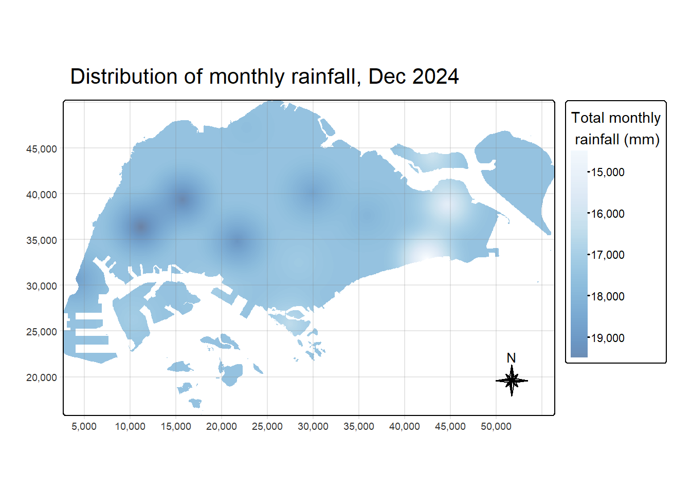
6.4.3 Automatic variogram modelling
Besides using the gstat package for manual variogram modeling, the autofitVariogram() function from the automap package can automate the process. This function automatically fits the best variogram model to the given data.
v_auto <- autofitVariogram(monthly_rainfall ~ 1,
rainfall_sf)
plot(v_auto)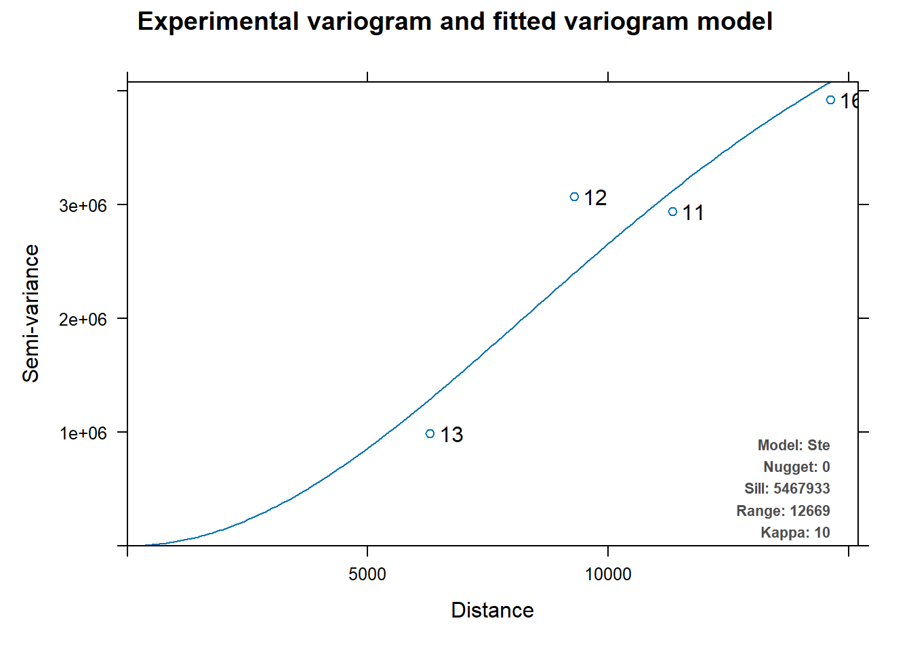
v_auto$exp_var
np dist gamma dir.hor dir.ver id
1 13 6296.514 988679.8 0 0 var1
2 12 9296.181 3076032.6 0 0 var1
3 11 11336.338 2943074.2 0 0 var1
4 16 14618.371 3923352.0 0 0 var1
$var_model
model psill range kappa
1 Nug 0 0.00 0
2 Ste 5467933 12668.52 10
$sserr
[1] 98471.64
attr(,"class")
[1] "autofitVariogram" "list" The following code chunks create the gstat object with the autofitted variogram and use it to predict the interpolated values.
k <- gstat(formula = monthly_rainfall ~ 1,
model = v_auto$var_model,
data = rainfall_sf)
kdata:
var1 : formula = monthly_rainfall`~`1 ; data dim = 15 x 2
variograms:
model psill range kappa
var1[1] Nug 0 0.00 0
var1[2] Ste 5467933 12668.52 10resp <- predict(k, coop)[using ordinary kriging]resp$x <- st_coordinates(resp)[,1]
resp$y <- st_coordinates(resp)[,2]
resp$pred <- resp$var1.pred
resp$pred <- resp$pred
kpred <- terra::rasterize(resp, grid,
field = "pred")The below code chunk uses tmap functions to map the interpolated rainfall raster kpred.
tm_check_fix()
tmap_mode("plot")
tm_shape(kpred) +
tm_raster(col_alpha = 0.6,
col.scale = tm_scale_continuous(
values = "brewer.blues"),
col.legend = tm_legend(
"Total monthly\n rainfall (mm)")) +
tm_title("Distribution of monthly rainfall, Dec 2024") + tm_layout(frame = TRUE) +
tm_compass(type="8star", size = 2) +
tm_grid(alpha =0.2)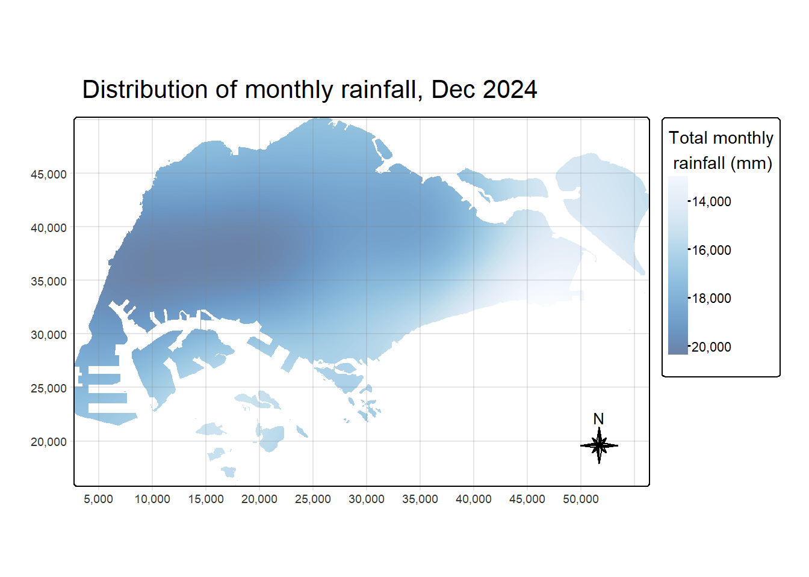
7 Geographically Weighted Predictive Modelling
Using geographically weighted predictive model (GW model) for Singapore’s weather analysis can offer significant benefits, particularly for capturing localized variations in rainfall, temperature, and wind patterns. Unlike global models that assume uniform relationships across the region, GW model accounts for spatial heterogeneity by applying different model parameters to different locations. This allows for more accurate predictions. By incorporating spatially varying influences, GW model can enhance the precision of weather forecasts and support urban planning.
Since the GW model takes a long time to run, we will narrow down the scope by training the model on data from October 2023 to September 2024 and using it to predict weather patterns for October 2024 to December 2024 only. For this prototype, we will focus on predicting daily rainfall using the remaining parameters.
The below code chunk filter climate dataframe for records from October 2023 to December 2024 and rename the columns for easier reference in the ML model formulas.
# Filter data for records from October 2023 to December 2024
climate_filtered <- subset(climate, Date >= as.Date("2023-10-01") & Date <= as.Date("2024-12-31"))
# Rename columns for easier references: Replace spaces with underscores and remove " ()" part
colnames(climate_filtered) <- gsub(" \\(.*?\\)", "", colnames(climate_filtered))
colnames(climate_filtered) <- gsub(" ", "_", colnames(climate_filtered))The below code chunk joins climate_filtered with station dataframe to create an sf dataframe called climate_sf.
climate_sf <- climate_filtered|>
left_join(station) |>
st_as_sf(coords = c("Long","Lat"),
crs= 4326) |>
st_transform(crs = 3414) |>
select(-c('code','Station_Type'))7.1 Correlation Matrix
To avoid multicollinearity among the independent variables, we plot the correlation matrix to examine the correlation coefficients between the variables using below code chunk.
climate_corr = climate_filtered |>
select(-c('Station', 'Station_Type', 'Year','Month', 'Day','Date'))
corrplot(cor(climate_corr),
diag = FALSE,
order = "AOE",
tl.pos = "td",
tl.cex = 0.5,
method = "number",
type = "upper")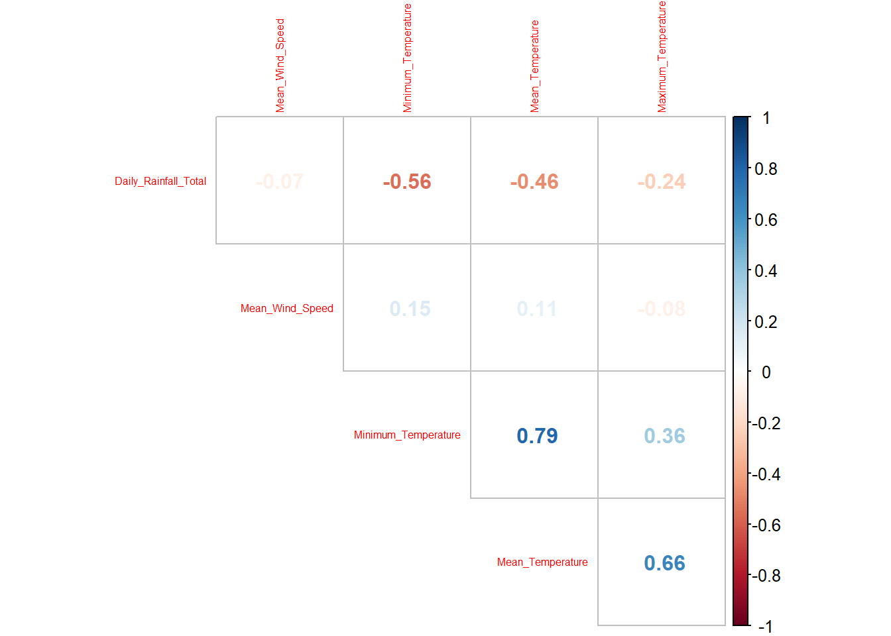
The correlation matrix shows Minimum Temperature and Mean Temperature has high correlation of 0.79. As Minimum Temperature has higher correlation with Daily Rainfall, we will exclude Mean Temperature in the subsequent model training.
7.2 Derive train and test dataset
7.2.1 Filter time period and Check for Overlapping Points
When using the GWmodel package to calibrate explanatory or predictive models, it is essential to ensure there are no overlapping point features. The code chunk below checks if there is any overlapping points presented in the climate_sf sf dataframe that will be used to split into train_data and test_data.
overlapping_points <- climate_sf %>%
mutate(overlap = lengths(st_equals(., .)) > 1)
sum(overlapping_points$overlap == TRUE)[1] 6836The output shows there are 6,836 overlapping points. This is expected to happen as multiple records are available for the same station across different days.
We use st_jitter() of sf package to move the point features by 5 meters to avoid overlapping cases.
climate_sf = climate_sf |>
st_jitter(amount = 5)7.2.2 Derive Train and Test dataset
The below code chunk creates training dataset using filter() to filter for weather records from October 2023 to September 2024. The output is saved in train_data_nd sf dataframe.
train_data_nd = climate_sf |>
filter(Date >= "2023-10-01" & Date <= "2024-09-30") |>
select(-c('Station', 'Year','Month', 'Day','Date'))Next we create testing dataset using filter() to filter for records from January 2024 to December 2024. The output is saved in test_data_nd sf dataframe.
test_data_nd = climate_sf |>
filter(Date >= "2024-10-01" & Date <= "2024-12-31") |>
select(-c('Station', 'Year','Month', 'Day','Date'))The code chunk below extracts the x,y coordinates of the full, training and testing data sets. The result are saved in coords_hdb, coords_train and coords_test respectively.
coords_climate <- st_coordinates(climate_sf)
coords_train <- st_coordinates(train_data_nd)
coords_test <- st_coordinates(test_data_nd)As random forest modelling function require aspatial dataframe, we drop the geometry from the train and test dataset using st_drop_geometry(). The output is saved in train_data_nd_nogeo and test_data_nd_nogeo.
train_data_nd_nogeo = train_data_nd |>
st_drop_geometry()
test_data_nd_nogeo = test_data_nd |>
st_drop_geometry()7.3 Non-spatial Random Forest
In this section, we calibrate a model to predict daily rainfall using random forest function of ranger package.
Before running the model, we set the seed using set.seed() to ensure the model result is reproducible. Next we use ranger() function to calibrate the random forest model.
set.seed(1234)
rf <- ranger(formula = Daily_Rainfall_Total ~
Maximum_Temperature +
Minimum_Temperature +
Mean_Wind_Speed,
data=train_data_nd_nogeo)
rfRanger result
Call:
ranger(formula = Daily_Rainfall_Total ~ Maximum_Temperature + Minimum_Temperature + Mean_Wind_Speed, data = train_data_nd_nogeo)
Type: Regression
Number of trees: 500
Sample size: 5460
Number of independent variables: 3
Mtry: 1
Target node size: 5
Variable importance mode: none
Splitrule: variance
OOB prediction error (MSE): 126.3767
R squared (OOB): 0.3822097 The model use the defaul number of trees of 500 to derive the forest using train_data_nd_nogeo .
Next we calculate the accuracy on test_data_nd_nogeo using below code chunk with the following functions:
predict(): userfmodel to predictresale_priceontest_data_nogeo. The result is saved in columnrf_resale_priceintest_data_nogeodataframe.mae(): function from Metrics package to calculate the mean absolute error given the actual and predicted values.rmse(): function from Metrics package to calculate the root mean square error given the actual and predicted values.cat(): concatenate the text strings and print the result.
# Make predictions on test_data
test_data_nd_nogeo$rf_daily_rainfall <- predict(rf, data = test_data_nd_nogeo)$predictions
# Calculate RMSE and MAE
rf_rmse = rmse(test_data_nd_nogeo$Daily_Rainfall_Total,
test_data_nd_nogeo$rf_daily_rainfall)
rf_mae = mae(test_data_nd_nogeo$Daily_Rainfall_Total,
test_data_nd_nogeo$rf_daily_rainfall)
# Display accuracy metrics
cat("Mean Absolute Error (MAE):", rf_mae, "\n")Mean Absolute Error (MAE): 7.257545 cat("Root Mean Squared Error (RMSE):", rf_rmse, "\n")Root Mean Squared Error (RMSE): 13.00517 7.4 Geographically Weighted Random Forest
In this section, we explore how to calibrate a model to predict Daily rainfall using grf() function of SpatialML package.
Key arguments used in below function:
formula: indicate the model dependent and independent variablesdframe: a non-spatial data frame of the data to be used for trainingbw: the number of nearest neighbors to be consideredkernel: useadaptivekernelcoords: load in the respective X and Y coordinates fromcoords_trainntree: number of trees to grow for each local forest, we use 10 trees to avoid long computation time.
set.seed(1234)
gwRF_adaptive <- grf(formula = Daily_Rainfall_Total ~
Maximum_Temperature +
Minimum_Temperature +
Mean_Wind_Speed,
dframe=train_data_nd_nogeo,
bw=370,
kernel="adaptive",
coords=coords_train,
ntree=10)Ranger result
Call:
ranger(Daily_Rainfall_Total ~ Maximum_Temperature + Minimum_Temperature + Mean_Wind_Speed, data = train_data_nd_nogeo, num.trees = 10, mtry = 1, importance = "impurity", num.threads = NULL)
Type: Regression
Number of trees: 10
Sample size: 5460
Number of independent variables: 3
Mtry: 1
Target node size: 5
Variable importance mode: impurity
Splitrule: variance
OOB prediction error (MSE): 147.7128
R squared (OOB): 0.277909 Maximum_Temperature Minimum_Temperature Mean_Wind_Speed
233675.7 481203.6 168986.6 Min. 1st Qu. Median Mean 3rd Qu. Max.
-79.0000 -2.9717 -0.2964 -0.1438 0.7225 106.6433 Min. 1st Qu. Median Mean 3rd Qu. Max.
-35.30833 -1.79983 -0.30383 -0.07497 0.15917 75.92571 Min Max Mean StD
Maximum_Temperature 5405.876 38456.58 16935.70 5336.371
Minimum_Temperature 16897.609 63161.90 35001.79 6884.053
Mean_Wind_Speed 4499.100 24135.74 12804.69 3201.3817.4.1 Predict using test data
The code chunk below combines the test data with its corresponding coordinates data.
test_data_nogeom <- cbind(
test_data_nd_nogeo, coords_test)Next, predict.grf() of spatialML package is used to predict the resale price using the test data and gwRF_adaptive model calibrated earlier.
gwRF_pred <- predict.grf(gwRF_adaptive,
test_data_nogeom,
x.var.name="X",
y.var.name="Y",
local.w=1,
global.w=0)7.4.2 Convert the predicting output into a data frame
The output of the predict.grf() is a vector of predicted values. It is more efficient to convert it into a data frame for further visualization and analysis.
GRF_pred_df <- as.data.frame(gwRF_pred)Next cbind() is used to append the predicted values onto test_data.
test_data_p <- cbind(test_data_nd, GRF_pred_df)The below code chunk calculates and print out the RMSE and MAE of predicted resale price on test data using the above gwRF_adaptive model.
grf_rmse = rmse(test_data_p$Daily_Rainfall_Total, test_data_p$gwRF_pred)
grf_mae = mae(test_data_p$Daily_Rainfall_Total, test_data_p$gwRF_pred)
# Display accuracy metrics
cat("Mean Absolute Error (MAE):", grf_mae, "\n")Mean Absolute Error (MAE): 7.790328 cat("Root Mean Squared Error (RMSE):", grf_rmse, "\n")Root Mean Squared Error (RMSE): 13.70395 7.5 Compare Model Performance
The below code chunk prints out the RMSE and MAE of the 2 predictive models we have calibrated.
cat("Non-spatial Random Forest - MAE:", rf_mae, "RMSE:", rf_rmse, "\n")Non-spatial Random Forest - MAE: 7.257545 RMSE: 13.00517 cat("Geographically Weighted Random Forest - MAE:", grf_mae, "RMSE:", grf_rmse, "\n")Geographically Weighted Random Forest - MAE: 7.790328 RMSE: 13.70395 The lower performance of the Geographically Weighted Random Forest (GwRF) model may be due to the limited number of trees used (only 10 trees, compared to 500 trees in the non-spatial random forest), as GwRF takes a long time to load. It could also result from overfitting, caused by spatial non-stationarity. Calculating an optimal adaptive bandwidth might help improve performance, though attempts to use the grf.bw() function were unsuccessful, as it is still in development (according to the SpatialML documentation). We can revisit this approach once the function is further improved in future versions of the SpatialML package.
7.5.1 Visualize the Predicted Values
Using a scatterplot to visualize actual versus predicted daily rainfall on the test dataset offers a clear, intuitive way to assess model performance. By plotting actual values on one axis and predicted values on the other, we can quickly see how well the model aligns with real values. Ideally, the points should fall along a 45-degree line, indicating that predictions closely match actual outcomes. Deviations from this line reveal errors and can highlight patterns, such as systematic under- or over-predictions. Additionally, scatterplots can help identify any potential outliers or segments where the model performs poorly, providing valuable insights for model refinement.
The below code chunk uses ggplot function to create 2 scatterplots on actual daily rainfall and predicted daily rainfall of the 2 models derived. The output plot are saved in plot_rf and plot_grf.
# Random forrest scatter plot
plot_rf = ggplot(data = test_data_nd_nogeo,
aes(x = Daily_Rainfall_Total,
y = rf_daily_rainfall)) +
geom_point(alpha = 0.5) +
geom_abline(slope = 1, intercept = 0, color = "red", linetype = "dashed") +
labs(x = "Actual Daily Rainfall",
y = "Predicted Daily Rainfall (Random Forest)",
title = "RF") +
theme_minimal()
# GWRF scatter plot
plot_grf = ggplot(data = test_data_p,
aes(x = Daily_Rainfall_Total,
y = gwRF_pred)) +
geom_point(alpha = 0.5) +
geom_abline(slope = 1, intercept = 0, color = "red", linetype = "dashed") +
labs(x = "Actual Daily Rainfall",
y = "Predicted Daily Rainfall (GWRF)",
title = "GWRF") +
theme_minimal()The below code chunk use grid.arrange() function from gridExtra package to draw the 2 scatter plots on the same row for easier comparison.
gridExtra::grid.arrange(plot_rf, plot_grf, nrow = 1)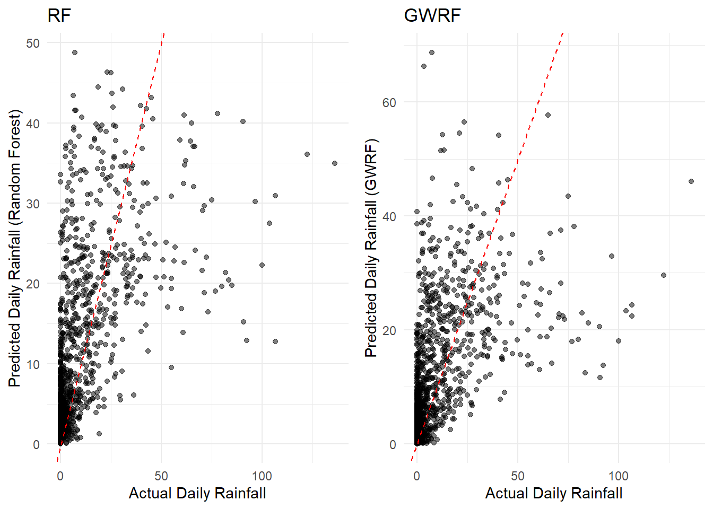
The scatter plots show both models demonstrate systematic biases: overprediction of low rainfall values and underprediction of extreme values. The performance of both models are almost similar. While GWRF may offer some improvement in capturing spatial variations, it does not completely resolve the issue with high rainfall underestimation.
8 UI Design
Basis the above exploration, I will include three main sections for the Geospatial Analysis module:
Extreme Weather Events
Geospatial Interpolation
Geospatially Weighted Predictive Modelling
8.1 Extreme Weather Events
As extreme weather events, such as the wettest, coldest, and hottest days by weather station, provides valuable insights into local climate variability and trends, this first section provides user with an interactive map to visualize extreme weather events at each station.
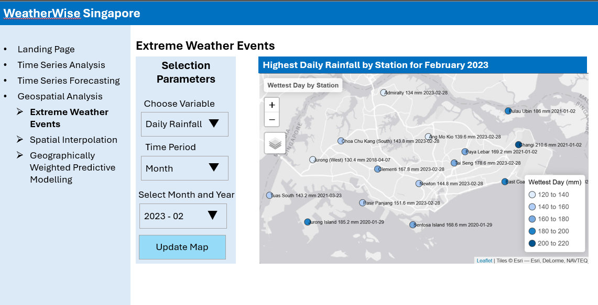
Interactivity:
Users can select the weather parameter of interest (Daily Rainfall, Min/Mean/Max Temperature, Mean Wind Speed) and specify the time period (Year/Month) to explore extreme events at each weather station.
The map allows for zooming in and out, enabling users to focus on specific areas or have an overview of extreme weather events across Singapore.
8.2 Spatial Interpolation
The second section provides users with a map visualization of interpolated weather measurements, enabling view of estimated parameters (rainfall, temperature, windspeed) at locations where no station/direct measurements are available. This would give users a view of continuous weather surfaces the reveal localized variations and pattern across Singapore.
This section includes 2 tabs for 2 different interpolation method:
Inverse Distance Weighted
Ordinary Kriging
8.2.1 Inverse Distance Weighted Interpolation
Inverse Distance Weighted (IDW) is a simple and fast way to interpolate weather parameters at locations without direct measurements.
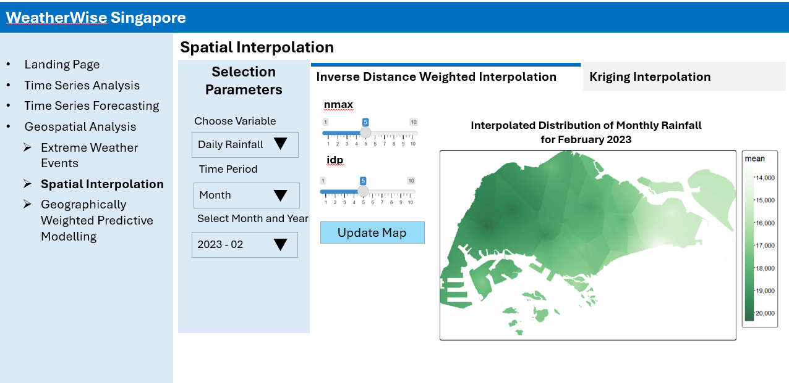
Interactivity:
Users can select the weather parameter of interest (Daily Rainfall, Min/Mean/Max Temperature, Mean Wind Speed) and specify the time period (Year/Month) to interpolate the values and plot on Sinagpore map.
Users can select different values for IDW calculation:
nmax: number of nearest observations that should be used for prediction or interpolation
idp: inverse distance power
| IDP Value | Effect |
|---|---|
| idp = 0 | All points are weighted equally, resulting in a simple average of values. |
| idp = 1 | Linear decay – Nearby points have more influence, but far points still contribute. |
| idp > 1 | More localized interpolation – Nearby points dominate, making the interpolation sharper. |
8.2.2 Kriging
Unlike simpler methods like Inverse Distance Weighting (IDW), Kriging accounts for spatial autocorrelation, improving prediction accuracy by considering both distance and statistical relationships between data points. This results in more reliable and precise interpolations, especially in areas with sparse weather stations.
This tab allows users to visualize and compare interpolation of weather measurements using both manual and automatically fitted variogram.
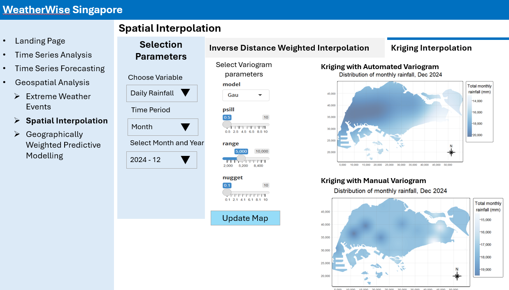
Interactivity:
Users can select a weather parameter of interest (Daily Rainfall, Min/Mean/Max Temperature, Mean Wind Speed) and specify the time period (Year/Month) to perform interpolation and visualize the results on the map of Singapore.
Users can adjust parameters for manual variogram (
psill,model,range,nugget) and observe the changes in the interpolated surface map, gaining insights into how these parameters influence the final spatial representation.
8.3 Geographically Weighted Predictive Modelling
The third section compares non-spatial random forest and geographically weighted random forest (GwRF) to assess the impact of spatial dependencies on predicting rainfall, temperature, and wind speed.
Apart from comparing the printed MAE and RMSE results, users can evaluate model performance through scatter plots of actual versus predicted values, where closer alignment to the 45-degree line indicates better accuracy. Deviations highlight errors, biases, and potential outliers, offering insights for model refinement and improvement.
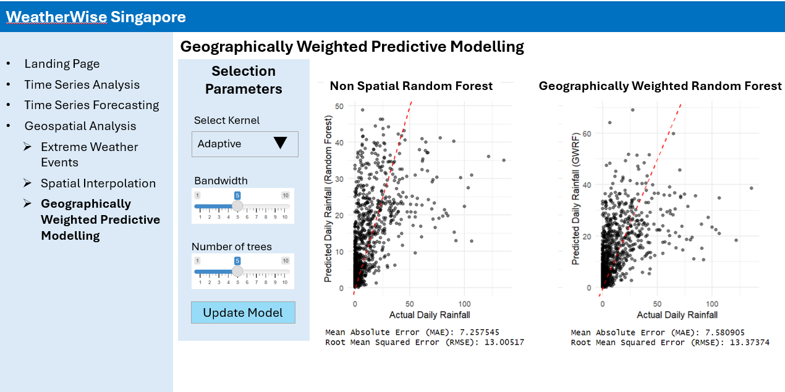
Interactivity:
- Users can select the kernel type (adaptive or fixed), bandwidth value, and the number of trees for each local random forest. Due to long runtimes, the number of trees is limited to a lower range to ensure user experience.
9 Reference
Kam, T.S. (2025). Analysing and Visualising Spatial Interpolation